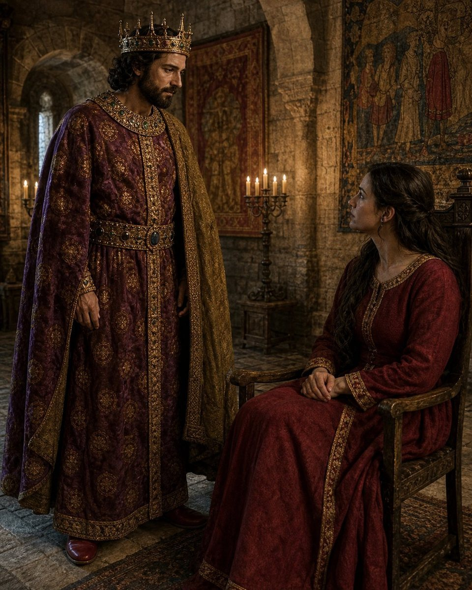
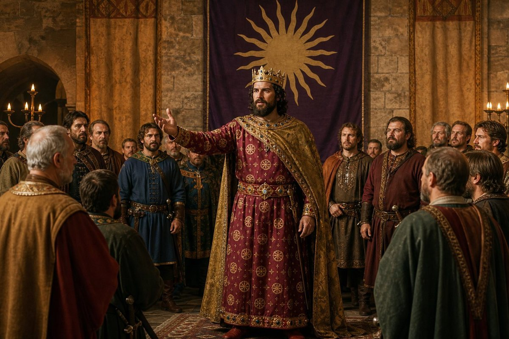
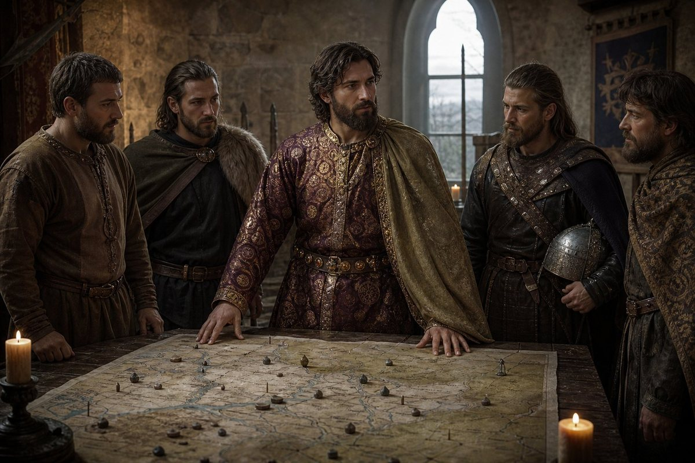
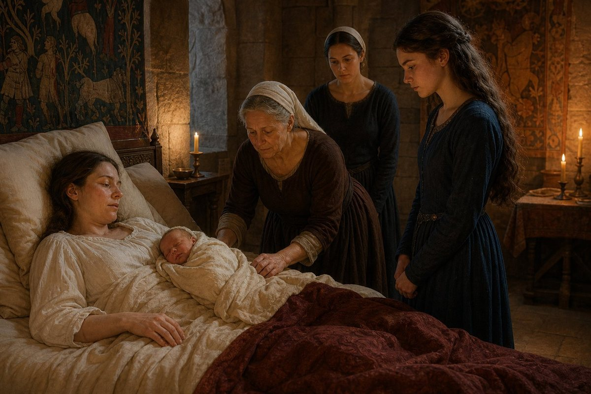
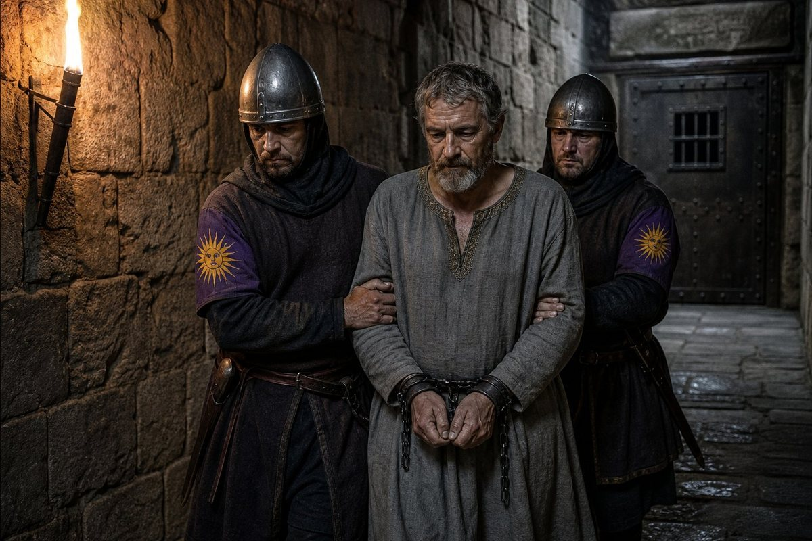
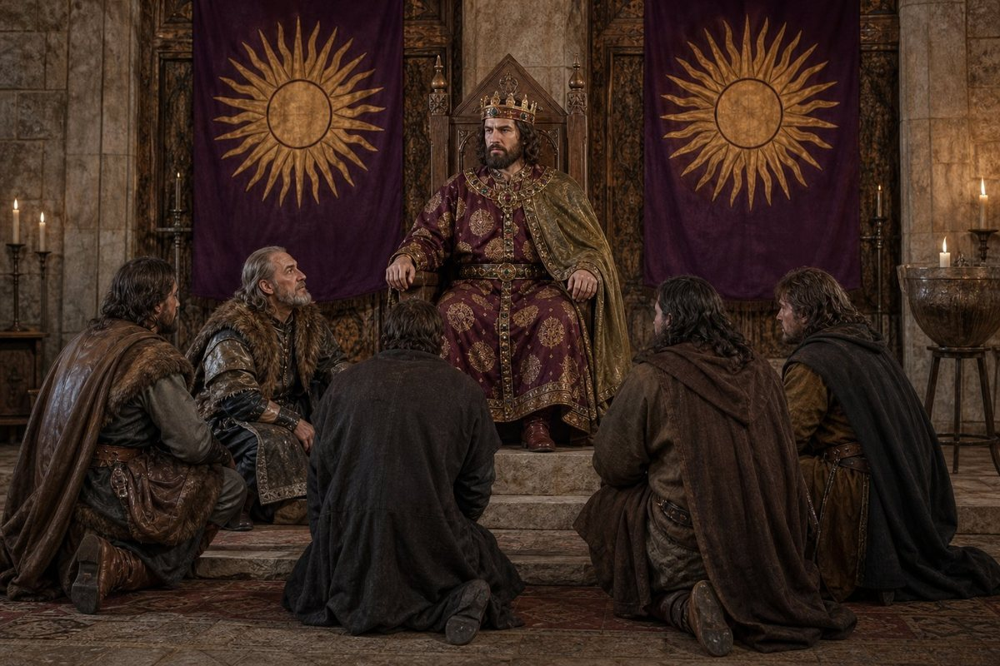

Philostrate's page
I am Philostrate, and I am sixteen, and I have the pen because Laurentios signed his last page on the twentieth day of the tenth month of 928 and died on the same day, and my brother the King put the book in my hands and said: you are the only one left who has read all of it, and you are the only one who can count.
That is what he said. I am going to put it down exactly, because it is the kind of thing a sister does not forget and a chronicler should not soften.
I am the fifth hand of this book. The first was the Greek, who wrote two volumes and put his pen down at Rome in the sixth month of 893. The second was my mother's smith, Matako, who wrote the third and fourth volumes and put hers down at Rome in the spring of 919. The third was Laurentios, who wrote the fourth and fifth and put his down on the twentieth day of the tenth month of 928. And now I am the fifth, and I am the youngest of them by a good margin and the first of my house.
I was born in this building on the thirty-first day of the eighth month of 912. I have never been further from it than the hills behind it. I can walk to the ridge and see the road coming over it and the trees on the other side, and I have never been on the road. My father was the King of this realm and I was his daughter, and I have been in this building for sixteen years and I have read every page of the book that is in it, and I counted the pages first because counting is the only thing I am sure of.
The sixteenth day of the third month
On the sixteenth day of the third month of 929 my brother the King realized that Dusica is his soulmate.
That is the record's sentence, and I am putting it down as the record puts it, because it is the first time the word has appeared in this book in fourteen years and it is a word that means something specific and I am going to be careful with it.
The record uses the word soulmate the way it uses every word it uses: once, on a date, and then it moves on. My father came to the same word on the thirteenth day of the tenth month of 907, with Raina, and I was not born then — I was born five years later — and I have read the page and it says what it says and does not say what it means.

I am going to say what I think it means, and I am going to mark it as mine.
A soulmate, in the record's use, is a bond the record recognizes and does not explain. It is not a marriage — my brother was married to Dusica for years before the word appeared. It is not a love affair — the record does not say what my brother felt, and I am not going to say what my brother felt, because I am his sister and not his biographer. It is a word that the record puts beside two names on a date, and that is all it is, and that is all it should be.
What I can tell the reader is what it looked like from the inside of this building, because I was here and I have been here for sixteen years and I have watched my brother and his wife and I have read the record and I have counted the dates.
It looked like this: the word appeared in the third month of 929, when my brother was twenty-six and Dusica was of an age I have never been able to pin down, and they had been married for eight years and she had borne him three children and was bearing him a fourth in the twelfth month of that year. It looked like a man who has been married for eight years suddenly being told, by a record that keeps dates and does not keep stories, that the woman he has been married to for eight years is his soulmate.
And I think — and this is mine, not the record's — that the word means something the record cannot say and that a sister can. My father had it with Raina. My brother has it with Dusica. Both men were married to their soulmates for years before the word appeared. Both men were kings. And both men were not as great as the one who came before them — my father was not as great as his father, and my brother is not as great as my father — and both men had a woman at their side who the record eventually called soulmate, on a date, and did not explain.
That is what I think it means. I am marking it as mine.
The nineteenth day of the third month
On the nineteenth day of the third month of 929, three days after the soulmate, my brother declared war on Nitra.
Nitra is a county in the country of Great Moravia, which is east of us and has been east of us for as long as this book has been keeping track. The enemy of the war was Dušan, who was King of Great Moravia, and the war was the fourth of the four wars of conquest of this reign: Hesse, Croatia, Lower Bosnia, Nitra.

I want to set down what a war looks like from the inside of this building, because no earlier hand has done it and because it is the only war I have been in all my life.
A war from the inside is not a battle. A war from the inside is a muster roll that gets longer, a treasury that gets shorter, a kitchen that feeds more men, a hall that is fuller at night and quieter in the day, and a brother who is more present and less present at the same time. A war from the inside is a room with a fire in it and a map on the wall and a man standing at the map with his hands behind his back, and a sister standing in the doorway not being asked to come in.
I counted. The war was declared on the nineteenth day of the third month of 929. Dušan was imprisoned on the twenty-ninth day of the first month of 930. That is ten months and ten days.
The war for Nitra
The record gives no battle for this war.

I am going to set that down and then I am going to sit with it, because it is the first time in the four wars of conquest that this has happened, and I have read all of them and I have counted them.
Hesse had battles. Croatia had a battle at Bihać. Lower Bosnia had two battles, at Bihać and at Kuclat. Nitra has none. The record gives a war declared on the nineteenth day of the third month of 929 and a war ended with Dušan imprisoned on the twenty-ninth day of the first month of 930, and no battle between them.
I will not invent one. I have been reading this record for four years and I know what a gap looks like, and I know what a gap means, and the gap here means either that there was no battle or that the record did not keep one, and I am not going to choose between those two options for the reader.
What I can say is what a ten-month war with no battle in the record looks like from the inside of this building, and it looks like ten months of everything I described in the last section and one thing more: it looks like a sister who is counting and who does not know what is happening on the road.
The twenty-second day of the twelfth month
On the twenty-second day of the twelfth month of 929, Dusica bore a son, and he was called Nikanor.

He is the fourth child of my brother and his Queen. Sophe is the eldest, and she was six when he was born. There are two more whose names are in the book and nothing else, and now there is Nikanor, and I have counted them and I am going to name them in this book because a chronicle that does not name the children of a king is not a chronicle.
I was in the room when Nikanor was born. I was sixteen and I had been in this building for sixteen years and I had never been in that room before, and my sister-in-law said: you are the one who counts, so you count this, and I did.
I counted the children. Four. Three in three and a half years, as I wrote in the last volume, and the fourth in the twelfth month of 929, while the war for Nitra was still running. A Queen who has borne four children in five years, while her husband has been in Rome and in wars and in hunts, and who is called soulmate on the sixteenth day of the third month of that year.
That is what I counted. I am marking it as mine.
The twenty-ninth day of the first month
On the twenty-ninth day of the first month of 930, Dušan was imprisoned.

He was King of Great Moravia, and he is the second King of Great Moravia to be imprisoned in this book. The first was Dobroslav, whom my father Edouinos imprisoned in 916, and I was four years old then and I have read the page and it says what it says.
With Dušan's imprisonment the counties came: Nitra, Hont, Liptov and Gemer, to a man called Kleanthes.
Kleanthes is the one who got four counties on the twenty-ninth day of the first month, and he is the one who becomes a vassal on the first day of the second month, and I am going to write about him in the next section.
What I want to set down here is the thing I have been counting: the King of Bavaria has now imprisoned two Kings of Great Moravia. My father did it in 916. My brother did it in 930. Fourteen years apart, two kings of the same country, father and son, and the record gives the dates and does not say what either of them thought.
The first day of the second month
On the first day of the second month of 930, five Moravian lords became vassals of the King of Bavaria.

They are:
Dobroslav, who had Orava.
Spitihnev, who had Pozsony.
Predslav, who had Bars.
Zvonimír, who had Zólyom.
And Kleanthes, who had Nitra, Hont, Liptov and Gemer, which were given to him eleven days earlier when Dušan was imprisoned.
Five lords of Great Moravia, and one of them is the same Dobroslav who was King of Great Moravia and whom my father imprisoned in 916. He is alive. He is a vassal of my brother. He dies on the thirtieth day of the fourth month of 930, which is in the next chapter, and I am not going to write it here.
What I want to set down is what it means for the dynasty. My father fought Great Moravia and imprisoned its King. My brother fought Great Moravia and imprisoned its King and took five of its lords as vassals. The country that was the enemy of the father is now the vassal of the son.
And the realm reached one hundred and five counties.
Dobroslav

Dobroslav was King of Great Moravia. My father Edouinos imprisoned him in 916, when I was four years old.
I have read the page. It says what it says. I am not going to invent what it does not say.
What I can tell the reader is what he looks like from the inside of this building, because I have seen him. He came here as a prisoner when I was four, and he was here for some years, and then he was not, and then he came back on the first day of the second month of 930 as a vassal of my brother, and he was alive and he was a lord of Orava, and he died on the thirtieth day of the fourth month of 930, falling.
He is the same man. The record does not say how long he was imprisoned. It does not say when he was released. It does not say where he went between 916 and 930. It gives his name on two dates — imprisoned in 916, vassal in 930 — and that is all it gives, and I am not going to fill the fourteen years in between.
What I will say is this: my father imprisoned him, and my brother made him a vassal. My father is dead. My brother is alive. Dobroslav was the King of Great Moravia, and he died a vassal of the son of the man who imprisoned him, on the thirtieth day of the fourth month of 930, falling.
I am not going to write the next chapter's death in this chapter. I am going to write it when I come to it.
The fourth day of the third month
On the fourth day of the third month of 930, Radovan died.
He was of the company. That is the record's phrase, and I am putting it down as the record puts it.
He flagellated himself to death. That is the manner, and it is the only thing the record gives beyond the name, the affiliation and the date.
I am not going to invent a reason. I am the fifth hand of this book and I have been reading the record for four years and I know what a gap looks like, and this is a gap. A man of the company, named Radovan, flagellates himself to death on the fourth day of the third month of 930, and the record gives me no reason.
What I can tell the reader is what the company is, because I have read every page of this book and I have counted them. The company is the men and women who came out of the north with Edouinos in the year 879. They are in this book from the first page. They are the smith and the Greek and Laurentios and the men who fought at Speyer and Lautern and Bihać and Kuclat. They are the roll that Laurentios kept for nine years and that I am keeping now.
Radovan is of the company. His name is not in the roll I have been keeping — I have checked — and I am not going to guess when he joined. What I will say is that a man of the company flagellates himself to death, and the record gives the manner and not the cause, and I will not invent one.
One hundred and five counties
The realm reached one hundred and five counties.
I have counted them. I counted them on the day Laurentios put the pen down, and I have been counting them since, and the number is one hundred and five.
Let me set down the count for the reader, because I am the one who counts and this is what I see. The realm was at eighty-eight counties on the fifteenth day of the eighth month of 922, when my brother was a boy of fourteen and my father was alive. It was at ninety-seven on the first day of the second month of 929, when Volume V ended. It is at one hundred and five now.
Seventeen counties in seven years. Four wars of conquest — Hesse, Croatia, Lower Bosnia, Nitra. Two Kings of Great Moravia imprisoned. Five Moravian lords as vassals. And a realm that is, by the record's own count, the sixth largest of five hundred and ninety-nine.
I am going to write the four subjects now, because my brother's book has four subjects and this chapter is in my brother's book and I am the one who has to carry them forward.
The first subject is Edouinos' last years and death, and it is closed. He died on the twenty-eighth day of the sixth month of 920. I was seven years old. I do not remember the day, and I am not going to pretend I do. What I remember is the building after it, and the way the rooms changed, and the way the men in the hall changed their voices.
The second subject is the rise of Antiphates, and it is not closed. He is twenty-six. He has declared four wars of conquest and won all four. He has taken the realm from eighty-eight counties to one hundred and five. He is August. He is Aggressive Attacker. He is Mystic and Prolific Pilgrim and Hunter and Confider and Conqueror. He is my brother.
The third subject is the rebellion war, and it is not closed either. There were three Chalcedonian risings — Heilwich's in 908, Willichin's in 921, Dietrich's in 923 — and a peasant war that ran four hundred and fifty days and killed a boy of thirteen. The men who refused the pledges of 920 are alive and in the world: Bohodar in Hungary, Adalhard in Trier, Ludwig the Black a disgraced count, Wilbert nothing. The war is not over. It is only in abeyance.
The fourth subject is the precarious kingdom, and this is the one I am least qualified to write and I am going to write it anyway, because I am the fifth hand and this is what I see from the inside of the household.
One hundred and five counties. A border with the Roman empire since the first day of the third month of 926. A church that has not changed its mind and three risings to prove it. Counties in the hands of children. A war in Croatia for two counties and fourteen hundred and eighty-five dead, and a war in Lower Bosnia for one county and seventy, and a war in Nitra for four counties and no battle in the record. A treasury I cannot see. A Queen who has borne four children in five years. A daughter of six called Sophe, two more whose names are in the book and nothing else, and a son called Nikanor who was born in the twelfth month of 929 while his father was at war.
Does it hold? I do not know. I am sixteen and I have been in this building all my life, and the thing I can tell the reader that no earlier hand could is what it looks like from the inside of a household: it looks like a family that has been given a very large estate and a set of obligations, and that is run on credit, favours, marriages, the memory of one dead king who could do everything, and the willingness of a great many people to come when they are called and be seen to come.
It has held. It will hold as long as the family keeps producing a man who can win a field and a woman who can keep an account.
Here ends the first chapter of the sixth volume and with it the opening of the sixth volume of this book, at Regensburg on the fourth day of the third month of the year of grace 930, in the hand of Philostrate, born in this building on the thirty-first day of the eighth month of 912, daughter of Edouinos the Pilgrim and of Raina his Queen, sister of Antiphates who is the King, sixteen years old, the first of this house to hold the pen and the fifth hand to hold it, who has written the first chapter of the sixth volume and read all of it, who has never been further from this building than the hills behind it, and who counted the pages first because counting is the only thing she is sure of.